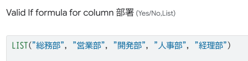
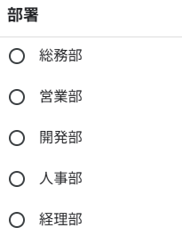
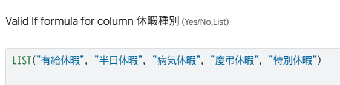
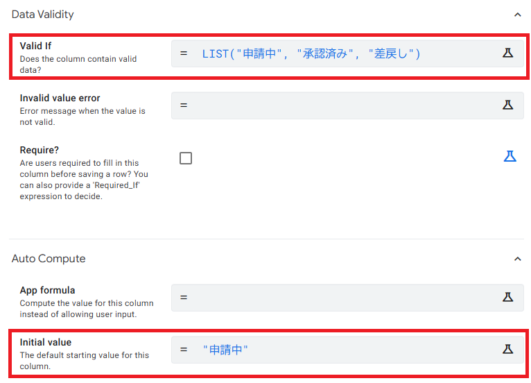
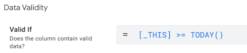
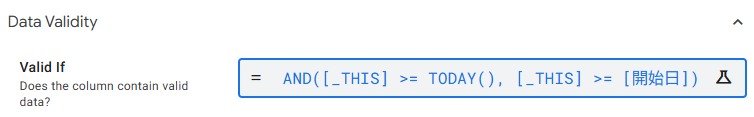
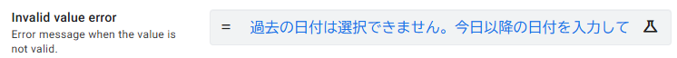
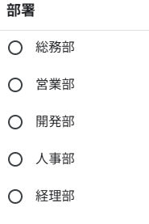
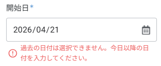

Valid If で入力制御しよう
3-1 Valid If とは？ ─ 入力制御の基本を知ろう
AppSheet の Valid If は、カラムに入力できる値を制限する機能です。ドロップダウンリストで選択肢を限定したり、数式で入力条件を定義したりすることで、ユーザーの入力ミスを防げます。
■ Valid If でできること
| 用途 | 設定例 | 効果 |
|---|---|---|
| 固定の選択肢 | "総務部", "営業部", "開発部" | ドロップダウンリストから選択 |
| 他テーブルの値を参照 | 社員マスタ[氏名] | 社員マスタの氏名リストから選択 |
| 条件付き制限 | IF(..., TRUE, FALSE) | 条件を満たす場合だけ入力可 |
| 日付範囲の制限 | [_THIS] >= TODAY() | 過去の日付を入力できなくする |
■ Valid If の動作イメージ
データを入力
満たすか判定
保存される
3-2 部署カラムにドロップダウンを設定する
社員マスタの「部署」カラムに Valid If を設定して、あらかじめ用意した部署名だけを選択できるようにします。手入力による表記ゆれ（例：「営業部」と「営業」が混在する）を防ぐのが目的です。
■ 設定手順
左メニューの Data をクリックし、社員マスタ テーブルを選択します。
「部署」カラムの行にある 鉛筆マーク（✏️ Edit） をクリックして、カラム詳細設定パネルを開きます。
パネルを下にスクロールし、「Data Validity」 セクションにある 「Valid If」 欄を見つけます。
Valid If 欄に以下の式を入力します。
LIST("総務部", "営業部", "開発部", "人事部", "経理部")※ 自社の部署名に合わせて変更してください。各値はダブルクォーテーションで囲み、カンマで区切ります。
右上の Save をクリックして保存します。

■ 動作確認
プレビュー画面で社員マスタの新規追加、または既存データの編集を開きます。「部署」フィールドがドロップダウンリストに変わり、設定した5つの部署名からしか選べなくなっていることを確認してください。

3-3 休暇種別カラムに選択肢を設定する
休暇申請テーブルの「休暇種別」カラムに Valid If を設定します。第2章で TYPE を Enum に設定済みですが、ここでは Valid If を使ってさらに入力値を厳密に管理する方法を学びます。
■ 設定手順
左メニューの Data → 休暇申請 テーブル → 「休暇種別」カラムの 鉛筆マーク（✏️ Edit） をクリックします。
Valid If 欄に以下の式を入力します。
LIST("有給休暇", "半日休暇", "病気休暇", "慶弔休暇", "特別休暇")右上の Save をクリックして保存します。

Valid If：保存時に値を検証するルール。条件式も書けます。
両方を設定した場合、Valid If が優先されます。中級編以降では Valid If をメインに使う ことをおすすめします。
3-4 承認ステータスの入力を制限する
休暇申請テーブルの「承認ステータス」カラムには「申請中」「承認済み」「差戻し」の3つの値しか入らないようにします。さらに、新規申請時は必ず「申請中」になるように Initial Value と組み合わせた設定を行います。
■ 設定手順
休暇申請 テーブル → 「承認ステータス」カラムの 鉛筆マーク（✏️ Edit） をクリックします。
Valid If 欄に以下を入力します。
LIST("申請中", "承認済み", "差戻し")Initial value 欄に以下を入力します（第2章で設定済みの場合は確認のみ）。
"申請中"これにより、新規申請時に自動で「申請中」が入り、ユーザーが誤って「承認済み」を選ぶことを防ぎます。
右上の Save をクリックして保存します。

■ Before / After
自由入力のため「承認」「OK」「承認ずみ」など表記がバラバラになる
「申請中」「承認済み」「差戻し」の3つしか選べず、新規は自動で「申請中」
3-5 日付の入力範囲を制限する
休暇申請テーブルの「開始日」と「終了日」に Valid If を設定して、過去の日付を指定できないようにします。また、終了日が開始日より前にならないように制限します。
■ 開始日の設定
休暇申請 テーブル → 「開始日」カラムの 鉛筆マーク（✏️ Edit） をクリックします。
Valid If 欄に以下の式を入力します。
[_THIS] >= TODAY()[_THIS] は「いま入力されているこのカラムの値」を意味する AppSheet の特殊な参照です。この式により、今日以降の日付しか入力できなくなります。
右上の Save をクリックして保存します。

■ 終了日の設定
「終了日」カラムの 鉛筆マーク（✏️ Edit） をクリックします。
Valid If 欄に以下の式を入力します。
AND([_THIS] >= TODAY(), [_THIS] >= [開始日])2つの条件を AND() で組み合わせています。「今日以降」かつ「開始日以降」の日付だけが入力可能になります。
右上の Save をクリックして保存します。

[_THIS] は AppSheet の特殊な参照で、「現在入力中のカラムの値」を指します。Valid If の式でよく使われる基本パーツなので覚えておきましょう。
■ エラーメッセージをカスタマイズする（任意）
Valid If の条件に違反した場合、デフォルトでは英語のエラーメッセージが表示されます。日本語のメッセージに変更するには、同じカラム詳細パネルの 「Invalid value error」 欄にメッセージを入力します。
開始日カラムの詳細パネルで 「Invalid value error」 欄を見つけます（Valid If のすぐ下にあります）。
以下のようなメッセージを入力します。
過去の日付は選択できません。今日以降の日付を入力してください。同様に、終了日にも以下を設定します。
終了日は開始日以降の日付を選択してください。右上の Save をクリックして保存します。

過去の日付は選択できません。今日以降の日付を入力してください。終了日：
終了日は開始日以降の日付を選択してください。
3-6 動作確認とまとめ
すべての Valid If 設定が完了しました。プレビュー画面で各設定が正しく動作するか確認しましょう。
■ 確認チェックリスト
- 社員マスタ：「部署」がドロップダウンで5つの選択肢のみ表示されるか
- 休暇申請：「休暇種別」がドロップダウンで5つの選択肢のみ表示されるか
- 休暇申請：「承認ステータス」が3つの選択肢のみ表示されるか
- 休暇申請：新規追加で「承認ステータス」が自動的に「申請中」になっているか
- 休暇申請：「開始日」に過去の日付を入力するとエラーになるか
- 休暇申請：「終了日」に「開始日」より前の日付を入力するとエラーになるか
- エラーメッセージが日本語で表示されるか（設定した場合）


■ この章で設定した Valid If 一覧
| テーブル | カラム | Valid If の式 | 効果 |
|---|---|---|---|
| 社員マスタ | 部署 | "総務部", "営業部", "開発部", "人事部", "経理部" |
5つの部署名から選択 |
| 休暇申請 | 休暇種別 | "有給休暇", "半日休暇", "病気休暇", "慶弔休暇", "特別休暇" |
5つの休暇種別から選択 |
| 休暇申請 | 承認ステータス | "申請中", "承認済み", "差戻し" |
3つのステータスから選択 |
| 休暇申請 | 開始日 | [_THIS] >= TODAY() |
今日以降のみ入力可 |
| 休暇申請 | 終了日 | AND([_THIS] >= TODAY(), [_THIS] >= [開始日]) |
今日以降かつ開始日以降 |
■ 第3章のまとめ
| No. | やったこと | ポイント |
|---|---|---|
| 1 | 部署にドロップダウン設定 | 固定値リストで表記ゆれを防止 |
| 2 | 休暇種別に選択肢設定 | Enum と Valid If の使い分けを学習 |
| 3 | 承認ステータスの制限 | Valid If + Initial Value の組み合わせ |
| 4 | 日付の範囲制限 | [_THIS]・TODAY()・AND() の活用 |
| 5 | エラーメッセージのカスタマイズ | Invalid value error で日本語メッセージ |
[_THIS] の使い方は、今後の AppSheet 開発でも頻繁に使う基本テクニックです。次の第4章では、テーブルのデータを条件でフィルタリングする Slice を学びます。